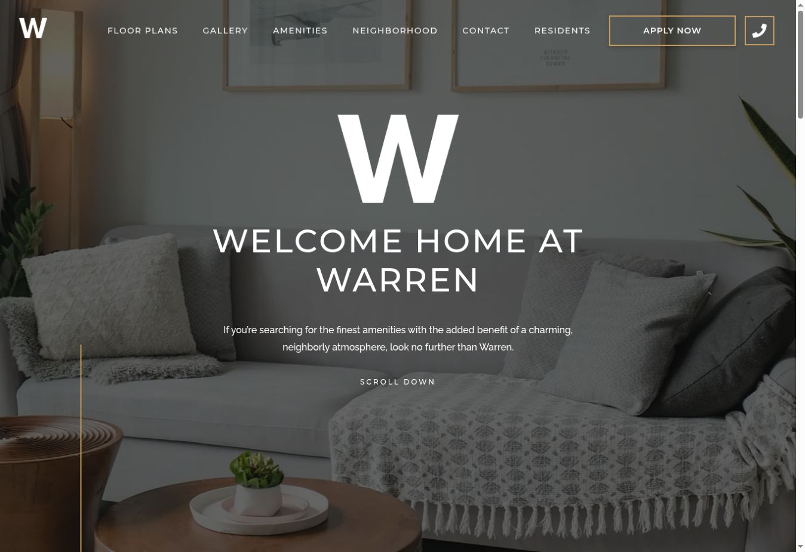
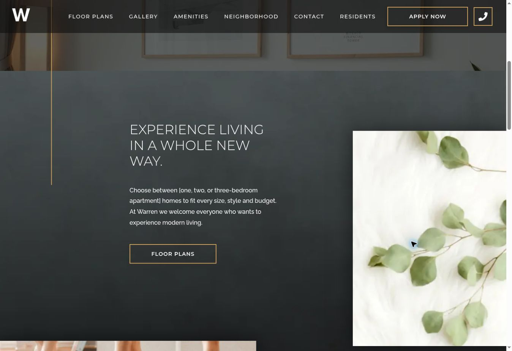
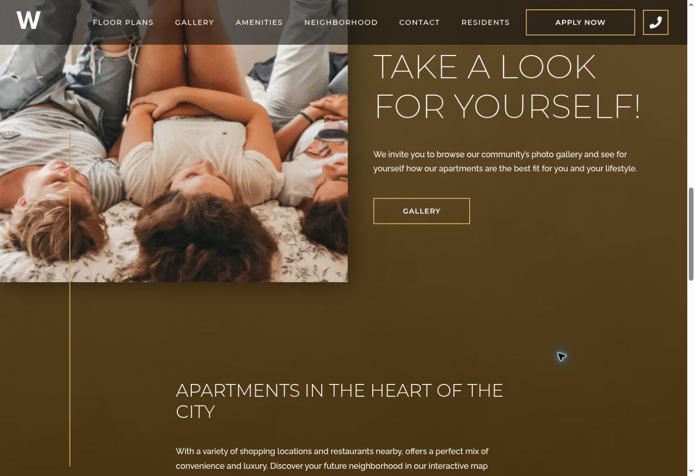
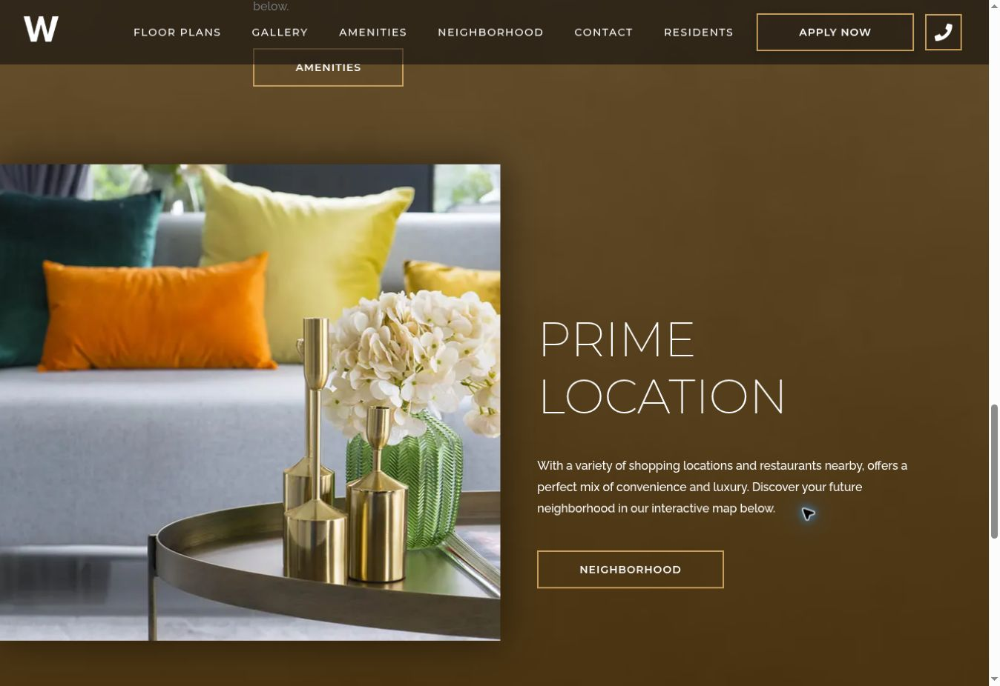

Build a feeling
Introduce the identity and atmosphere before asking visitors to process detailed information.
A sense of home, before the first visit. An editorial approach to apartment living, shaped through warm imagery, quiet luxury and clear paths to discovery.

01 / The first impression — live desktop capture presented in an illustrative laptop frame.
Apartment searching is practical. Choosing a home is personal. The experience needs room for both.
Warren pairs an atmospheric brand introduction with familiar navigation to floor plans, gallery, amenities and neighborhood information. The design invites visitors to picture everyday life here, while keeping the next useful destination within reach. Its character comes from the relationship between photography, restrained typography and generous space.
The full-bleed interior photograph establishes the mood immediately. A dark overlay gives the white monogram and welcome headline a shared focal point. Supporting copy stays short, allowing the image to carry the emotional introduction.
The gold outline distinguishes “Apply Now” from the text links. Floor Plans remains directly accessible for visitors who already know what they want, while the scroll cue invites a slower introduction.
The homepage creates a sequence. Navigation lets people choose their own pace.
After the welcome, the introduction brings bedroom options and a Floor Plans link into view. Gallery content adds visual context; amenities and location extend the story beyond the apartment itself. These sections act as previews, with dedicated pages available when a visitor wants more detail.
Introduce the identity and atmosphere before asking visitors to process detailed information.
Bring home types and floor plans into the story early, supporting a practical next step.
Use gallery and amenity previews to connect the property with the experience of living there.
Offer location details, contact access and an application route as interest becomes intent.

02 / Introduction — a narrow reading column and offset photography create breathing room.
A deliberate rhythm of type, image and pause.
The introduction uses a compact text column against a generous image field. In the gallery preview, the composition reverses: a large lifestyle image sits beside an oversized headline and a single action. This change in scale creates a new focal point as visitors scroll. Fine gold rules connect sections without competing with the photography.

A large photograph gives the gallery invitation visual weight. The headline is expressive, but the button is literal: “Gallery.” That distinction lets the editorial voice coexist with clear navigation.
Placing this preview after the introduction shifts the conversation from what is offered to how living here might feel. It supports exploration without turning the homepage into a complete image archive.
Raleway and Montserrat form the template’s typographic palette. Light, uppercase display type gives the headlines an open, architectural quality. Smaller navigation labels use tracking to separate choices; supporting copy uses a quieter scale for sustained reading.
The repeated W, gold borders and dark surfaces carry the identity between sections. Photography softens that structure with textiles, plants and lived-in interiors.
Interpretive palette inspired by the live design. Swatches describe the visual direction rather than production color specifications.
A home belongs to a wider daily routine.
The location section expands the story to convenience, dining and nearby destinations. Following the interior and lifestyle content, it gives visitors another dimension to consider: how the property might fit into their day. The adjacent photograph maintains visual continuity while the Neighborhood link opens a more focused destination.

A charming, neighborly atmosphere. A new place to call home.
EXPLORE FLOOR PLANS →On a small screen, the priority is a readable message, an intentional image crop and a direct route to the next task. Stacking image-and-copy compositions preserves their order while giving each element enough room.
This companion concept explores a compact header and an earlier floor-plan action. The essential brand cues—monogram, dark photography and gold accents—stay recognizable at a different scale.
A strong visual direction is the start of a usable experience.
The template establishes a coherent foundation. A production review should also check image contrast, navigation behavior, keyboard access and the accuracy of each content-to-action pairing. These are opportunities for refinement, rather than measured findings from user testing.
Check lightweight headings and small labels against every image crop. Overlays should support readable text across desktop and mobile.
The amenities preview currently uses location-focused copy. Aligning the headline, description and destination would make that section’s purpose clearer.
Replace template placeholders before launch, verify the application destination and test focus states, menu access and touch targets at small sizes.
Design rationale based on the live Warren template. Desktop images are actual website captures; the laptop frame and mobile concept are presentation mockups. Photography and brand assets are shown as part of the original Razz template. No user research, conversion results or usability metrics are claimed.